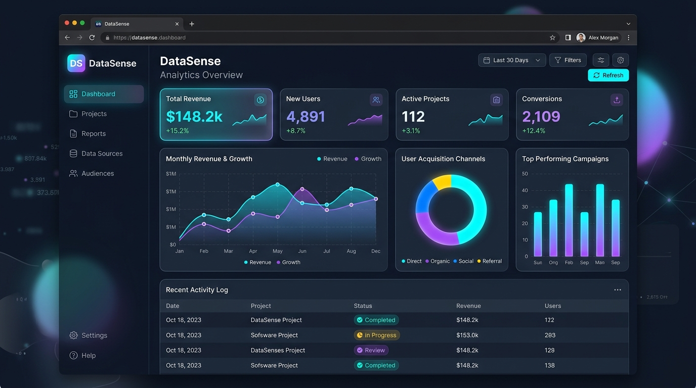
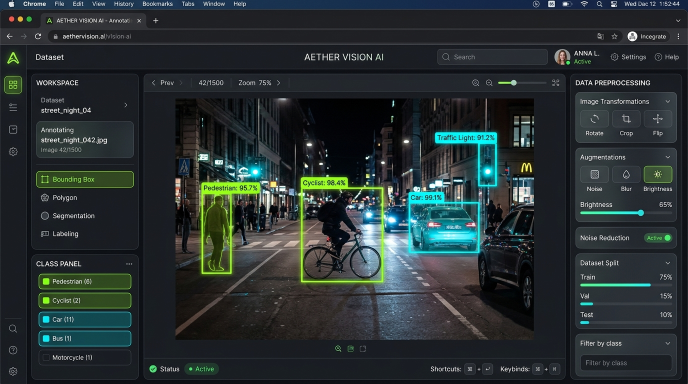
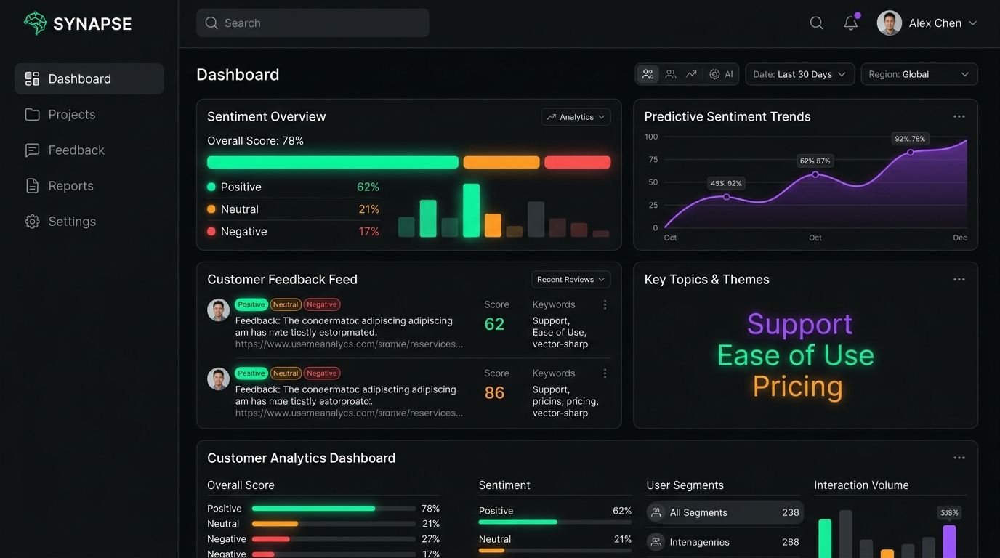

Hello, I'm
Chethana G Shenoy
Master of Computer Applications (MCA) post-graduate with real-world industry background as a Data Annotator Intern at Robosoft Technologies. Passionate about blending rigorous data analytics, Python pipeline automation, and modern, high-performance frontend interfaces.
Bridging Analytical Rigor & User Experience
Transforming complex datasets into actionable insights and intuitive digital interfaces.
Dedicated to building data-driven systems and modern web applications with precision.
I am an MCA (Master of Computer Applications) graduate from the Poornaprajna Institute of Management, Udupi. My journey blends deep technical foundations in computer science with practical hands-on experience in the software industry.
During my 6-month internship as a Data Annotator at Robosoft Technologies (Santekatte), I worked at the intersection of AI dataset preparation, computer vision labeling, and quality validation. This experience honed my extreme attention to detail, my understanding of machine learning data lifecycles, and how reliable data powers modern intelligent software.
Concurrently, I have expanded my toolkit into Data Analytics (leveraging Python, Pandas, NumPy, and visualization libraries) as well as Modern Frontend Development (crafting clean, responsive, and accessible web experiences using modern HTML, CSS, and JavaScript).
Data Annotation & AI Dataset Quality
Proven track record at Robosoft Technologies in bounding-box labeling, semantic segmentation tags, error auditing, and AI training data verification.
Python Programming & Analytics
Building automated data ingestion pipelines, statistical analysis, exploratory data analysis (EDA), and data cleaning with Pandas, NumPy, and Matplotlib.
Modern Frontend Web Development
Engineering responsive, fluid user interfaces utilizing modern HTML5, CSS3 glassmorphism, flexbox/grid layouts, and interactive Vanilla JavaScript.
Continuous Learning & Methodical Approach
Strong problem-solving acumen, disciplined agile team collaboration, thorough documentation habits, and eager to master emerging tech frameworks.
Skills & Technologies
A balanced combination of data intelligence, scripting, and web development.
Python
Proficient in scripting, object-oriented concepts, automated data parsing, and algorithmic problem-solving. Certified in Python for Students.
Data Annotation & QA
6 months professional hands-on experience at Robosoft Technologies. Bounding boxes, polygon segmentation, data sanitization, and model training set QA.
Data Analytics & EDA
Exploratory Data Analysis using Pandas and NumPy. Identifying correlation trends, statistical summaries, missing value imputation, and anomaly detection.
HTML5 & Modern CSS3
Semantic HTML markup, modern CSS custom properties, Flexbox/Grid architectures, glassmorphism, responsive media queries, and smooth keyframe animations.
JavaScript (ES6+)
DOM manipulation, asynchronous event handling, fetch API/REST integration, client-side data validation, dynamic interactive components, and animations.
SQL & Database Concepts
Relational schema design, writing queries (SELECT, JOIN, GROUP BY, aggregations), database normalization, and data extraction for analytical pipelines.
Data Visualization
Transforming numbers into intuitive visual stories. Chart.js, Matplotlib, interactive KPI dashboards, and clean presentation of complex metrics.
Git & Collaboration
Version control workflows, branching, commits, GitHub repositories, and collaborative development practices in team environments.
Experience & Education
Real-world industry practice combined with solid academic foundations.
Data Annotator Intern
Robosoft Technologies
Served as a core member of the data operations team, supporting machine learning and computer vision initiatives with high-precision annotation, tagging, and quality assurance.
- Precision Dataset Annotation: Spearheaded bounding-box labeling, polygon segmentation, and multi-class tagging for complex visual datasets used in model training.
- Quality Assurance & Auditing: Conducted thorough peer QA reviews, reducing label ambiguity and upholding an annotation accuracy benchmark above 99%.
- Pipeline Collaboration: Coordinated closely with software engineers and machine learning practitioners to refine labeling guidelines and streamline dataset turnaround time.
- Python Data Validation: Utilized Python scripting techniques for inspecting batch datasets, identifying discrepancies, and verifying metadata consistency.
Master of Computer Applications (MCA)
Poornaprajna Institute of Management (PIM), Udupi
Advanced post-graduate coursework focused on software architecture, data structures, algorithms, database systems, web engineering, and foundational data science principles.
Python for Students Certification
Verified Professional Credential
Comprehensive training in Python core programming, data structures, file handling, automation, and foundational modules for data processing and problem-solving.
Featured Projects
A selection of platforms highlighting data analytics, annotation pipelines, and frontend craft.

Data AnalyticsDataSense — Business Analytics & KPI Dashboard
Interactive executive intelligence dashboard displaying real-time revenue analytics, user acquisition channel breakdowns, and automated exploratory statistical summaries with dynamic charts.

AI & AnnotationAnnoVision — AI Dataset Annotation Studio
Computer vision dataset annotation tool interface inspired by enterprise workflows at Robosoft Technologies. Features multi-class bounding box drawing, class confidence scoring, and dataset split management.

NLP AnalyticsSynapse — NLP Sentiment & Intelligence Engine
Natural Language Processing pipeline that classifies customer feedback into polarity categories (Positive, Neutral, Negative), extracts recurring key topics, and displays predictive sentiment trends.
const style = "Dark Glassmorphic";
const perf = "100/100 Lighthouse";
Modern Dark Glassmorphic Portfolio (This Site)
Bespoke personal portfolio website engineered with pure semantic HTML5, Vanilla CSS3 with fluid typography and frosted backdrop filters, dynamic JavaScript micro-interactions, and interactive lab simulators.
Let's Connect & Build Together
Open for full-time opportunities, impactful data analytics roles, and creative software projects.
Send a Message
Feel free to drop a message for job inquiries, project collaborations, or networking!